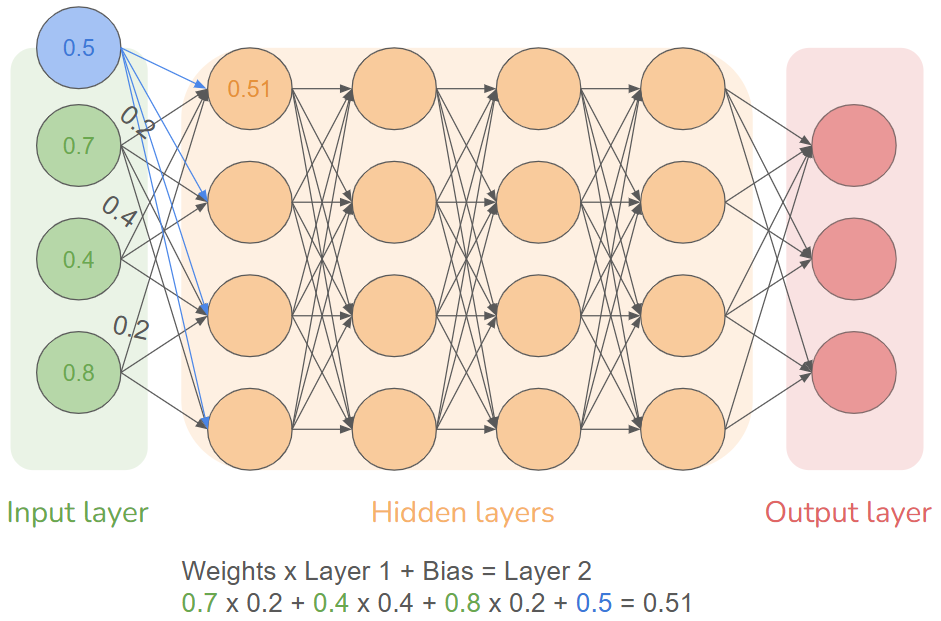

Lesson 3 - Neural networks
Neural networks
A neural network is one of the main building blocks in any artificial intelligence model. A neural network can take input data and output a probability of output through mathematical functions.
Layers
A neural network is made up of nodes. Each node can hold a value, typically between 0 and 1. Multiple nodes can make up a layer. The network will have 1 input layer and 1 output layer. Between these can be as many layers as you want, these in-between layers are called hidden layers.
Forward propagation
When values from 1 layer are “propagated” to the next layer, the following happens:
- Between each node in one layer to the next, there is a weight.
- When one node is connected to another node in the next layer and the value is propagated forward, the current value is multiplied by the weight.
- Since every node between each layer is collected, the value of the next layer is simply the sum of all the weighted values of the previous layer.
- However, since we want our values to be between certain values, we can apply an activation function to the result. The activation function will squash every single possible number into a number between the desired range. For example, a sigmoid function will squash all the numbers between 0 and 1, the more negative a value is (such as -9999999) the closer to 0 the result of the function will be and vice versa.
Bias
For each layer, it is very common to have 1 bias value attached to the layer. This bias value is not derived from the propagation of the last layer but will be added to the sum of products in the next layer. The purpose of a bias value is to allow the model to capture more complex patterns.

Loss and backpropagation
Once all the input values have been propagated through the model and the output values are found, the output values are compared to the label of the data. This comparison uses a loss function and it takes all the output values and the label and calculates a value to show how good or bad the output was. The loss function can take many forms such as taking the sum of all the absolute values of the difference between output and label, or you can take the sum of all the squared values of the difference. The loss function mostly depends on what the AI is being used for.
After the loss value is calculated a process called back-propagation is started. Back-propagation uses calculus to find how much each of the weights and biases should be changed compared to the loss value. Each of these calculated values is multiplied by the learning rate of the model and subtracted from each respective weight and bias.
The process of forward and backward propagation is done many times with the training data, the entire process is called gradient descent.
References
- https://www.youtube.com/watch?v=aircAruvnKk&list=PLZHQObOWTQDNU6R1_67000Dx_ZCJB-3pi
- https://www.ibm.com/topics/neural-networks